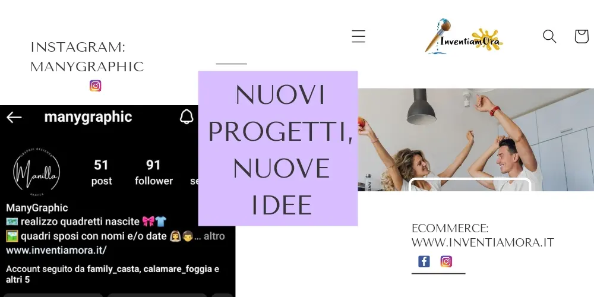
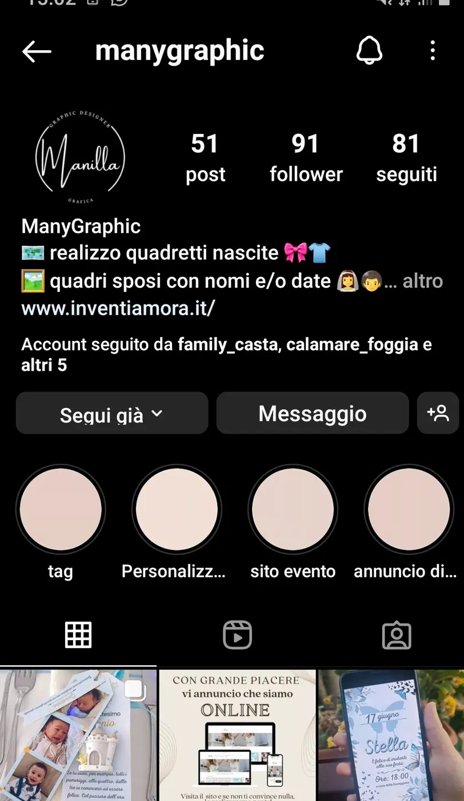

Nuovi progetti e nuove idee in corso.

Oggi dovevo farlo, dovevo scrivere qui perché voglio aggiornarvi perché ci sono nuovi progetti e nuove idee.
Sì, perchè da diversi mesi non scrivo con frequenza il mio blog, non metto più i miei pensieri, le mie collaborazioni qui.
Questo perché ho la giornata piena, piena di impegni e di progetti.
Tutto incentrato sulla grafica, sui social e ciò che concerne il digital. Ormai sono dentro fino al collo!
La mia passione per il digital mi ha portata oggi ad essere un Social Media Manager per attività locali.
Proprio la voglia di imparare sempre di più, di capire a fondo come fare al meglio il mio operato, mi ha portata ad iscrivermi ad un master di Digital Marketing Specialist, che ancora sto percorrendo.
Un master che mi sta insegnando molto e che mi porterà a fine anno ad essere certificata proprio in questo settore.
Inoltre, non mi sono fermata, ho iniziato a creare, a inventarmi e a far conoscere ciò che ho sempre fatto da autodidatta.
Ho creato un account instagram Manygraphic dove realizzo, su richiesta, quadretti per la nascita, inviti digitali, quadretti onomastici, quadri con grafiche d'arredo, quadri interattivi e sono sempre in elaborazione per creare altre cose carine.

Nel frattempo però, con la collaborazione della web Agency con cui lavoro DevShare, abbiamo intrecciato le idee e ideato un e-commerce di grafica su richiesta e su articoli confezionati da noi.
L'idea è quella di liberare la creatività di tutti. i realizzare cose uniche dove ognuno deve sentirsi libero di creare ciò che vuole con le idee che ha in testa.
Ovviamente non tutti sanno creare grafiche e magari, tante idee restano nella testa.
Qui interveniamo noi dando il giusto supporto per creare il design che desideri.
il nostro e-commerce intanto ha già preso vita, si chiama InventiamOra.it , su questo portale troverete già una vasta scelta di t-shirt, costumi da bagno, quadretti nascita e occasioni, body baby, bag, cappellini.
Insomma, tutte cose carine che si possono acquistare sia nella versione come la trovate sul portale e sia in una versione personalizzata.
Non è una bella idea?
e voi la lasciate viaggiare la creatività?
vi consiglio di dare un'occhiata al nostro e-commerce perché mi piacerebbe sapere una vostra opinione su questo progetto.
E se volete potete anche seguirci sui social
facebook InventiamOra CLICCA QUI
instagram InventiamOra CLICCA QUI